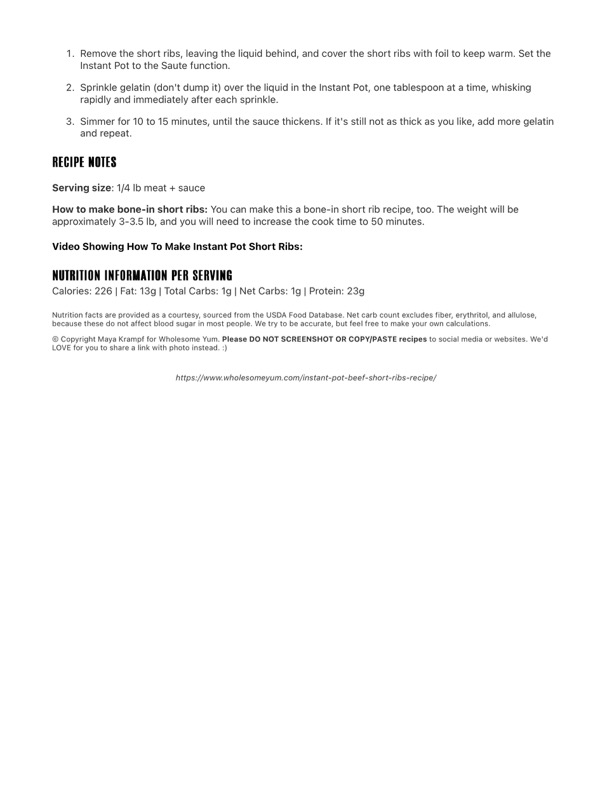

Easy Instant Pot Beef Short Ribs (Optional Thicker Sauce)

Original cookbook page 164
Optional steps for making a thicker sauce for the Instant Pot beef short ribs recipe
Cook: 10-15 minutes
Ingredients
- 2 tbsp Unflavored gelatin powder (for thickening)
Instructions
- Remove the short ribs, leaving the liquid behind, and cover the short ribs with foil to keep warm. Set the Instant Pot to the Saute function.
- Sprinkle gelatin (don't dump it) over the liquid in the Instant Pot, one tablespoon at a time, whisking rapidly and immediately after each sprinkle.
- Simmer for 10 to 15 minutes, until the sauce thickens. If it's still not as thick as you like, add more gelatin and repeat.
Recipe #164 from collection